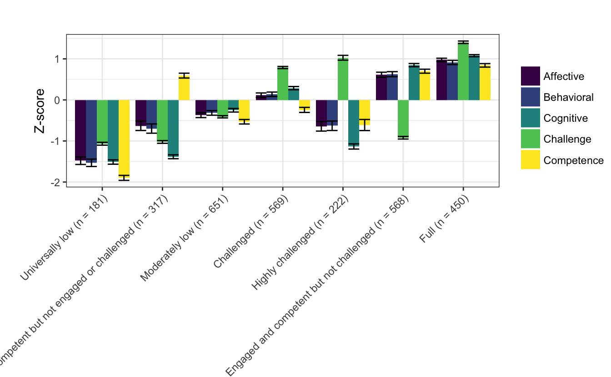

Chapter 7 Appendix
7.1 Appendix A: STEM-PQA alignment
| Work.With.Data | Description | STEM.PQA |
|---|---|---|
| Asking questions or defining problems | Discussing and exploring topics to investigate and pose questions. | Predict, conjecture, or hypothesize |
| Making observations | Watching and noticing what is happening with respect to the phenomena or problem being investigated. | Classify or abstract |
| Generating data | Figuring out how or why to inscribe an observation as data and generating coding frames or measurement tools. | Collect data or measure; Highlight precision and accuracy |
Data modeling Understanding and explaining phenomena using models of the data that account for variability or uncertainty. Simulate, experiment, or model
Interpreting and communicating findings Discussing and sharing and presenting findings. Analyze; Use symbols or models
7.1.1 Appendix B: Program descriptions
| Program.Name | Program.Description |
|---|---|
| Island Explorers | A science-focused program that aims to help youth develop expertise on one species found in the local ecosystem by reading and writing about related content for up to an hour per day; undertaking data collection and analysis tasks to learn about the local ecosystem and how to communicate scientific data; developing vocabulary about the local ecosystem; using art to learn and communicate information; and publishing a book illustrating important elements of the species being studied. Located in both the classroom and local ecosystem. 27 students who are rising 6th graders. Youth spend the morning in more academically-oriented sessions in a classroom setting, while afternoon sessions involved STEM-oriented enrichment sessions taking place outside (the program was associated with Outward Bound) with an emphasis on exploration of the local ecosystem. |
| The Ecosphere | A science-focused program that aims to help youth to explore the marine life of Narragansett Bay. Efforts were undertaken to build youth content knowledge in the areas of ecosystem preservation, marine biology, and water quality, and related skills, such as questioning, showing initiative, data collection, measuring, maintaining an ecosystem, and analyzing water samples. Located in a classroom setting, shoreline, and science education center. 27 youth who are rising 6th to 9th graders. Youth attended programming in a classroom at an area middle school and in a field-based setting on alternating days. Field-based settings included a science education center at a community-based organization and field trips to sites in the community related to the program’s focus. |
Zoology Partners A science-focused program that aims to support youth’s development of content knowledge related to the issue of endangered species, including how species become endangered, processes for monitoring ecosystem viability and population levels, solutions to prevent species from becoming endangered, and approaches to reviving populations that are currently endangered. Located in the classroom as well as zoos, parks, and other natural areas. 25 youth who are rising 6th to 9th graders. Youth attended programming in a classroom at an area middle school and in a field-based setting on alternating days. Field-based settings included a local zoo and field trips to sites in the community related to the program’s focus.
Marine Investigators A science-focused program that aims to provide youth with opportunities to learn about and experience Narragansett Bay; examine human impacts on the local ecosystem, including how the geography of the Bay helped influence human history and how the history of humans along the shoreline has impacted the Bay, and begin the process of cultivating a sense of stewardship among participating youth for caring for and protecting the Bay in the future. Located in the classroom, shoreline along the bay, ship on the bay, and various field locations associated with bay health. 19 youth who are rising 7th to 9th graders. Youth attended programming in a classroom at an area middle school and in a field-based setting on alternating days. Field-based settings included the local bay shoreline, a voyage on a marine education ship researching in the Bay, and field trips to sites in the community related to the program’s focus. During the span of the program, youth had the opportunity to participate in both a water quality research study. Comunidad de Aprendizaje A STEM-focused program that aims to help youth improve basic skills in mathematics and develop an interest in STEM content and entrepreneurship. Primarily in the classroom setting. 33 students who are rising 5th to 8th graders. Morning sessions are characterized by direct instruction in mathematics for individual grade levels and mixed grade level afternoon enrichment sessions in either robotics or dance. The direct instruction component of the programs was organized around a theme of promoting entrepreneurship with the goal of helping participating youth better see the relevance of mathematics to future career goals and opportunities.
Jefferson House A STEM-focused program that aims to support youth’s development of basic math skills, the program was primarily focused on helping youth develop problem solving, self-improvement, and critical thinking skills. Located in a classroom. 11 youth who are rising 7th graders. The youth spent the morning in more academically-oriented sessions in a classroom setting focusing on basic skill development, while afternoon sessions involved STEM-oriented enrichment sessions involving media, art, and nutrition. Enrichment offerings varied by day, with math sessions occurring twice per week, alternating with academically oriented sessions in the am that were oriented at supporting skill development in English/language arts.
Uptown Architecture An engineering-focused program that aims to support youth’s participation in a process to design and build an outdoor learning space for use at the middle school where the program was housed. A key focus of the program was to provide youth with the opportunity to use design thinking as a problem-solving tool and have the experience of affecting their community positively through the design/build process. Located in a classroom, building shop, and various field locations. 18 youth who were rising 6th to 9th graders. Youth attended programming in a classroom at an area middle school and in a building shop located at a community-based organization on alternating days, while also taking field trips to locations associated with the program’s overall theme.
Building Mania An engineering-focused program that aims to provide youth with the opportunity to experiment with designing and using simple machines. A goal of the program is to have youth engage in the engineering design process by determining a need, brainstorming possible designs, selecting a design, planning and drawing out the design, creating and testing and revising it, and producing a final machine. Located in the classroom, design labs, and other local locations. 24 youth who are rising 6th to 9th graders. Youth attended programming in a classroom at an area middle school and a field-based setting on alternating days. Field-based settings included a design lab at a community-based organization and field trips to sites in the community related to the program’s focus.
Adventures in Mathematics A mathematics-focused program that aims to help youth to develop the basic math skills and prevent summer learning loss among participating youth through direct instruction and participation in math-related games. Located primarily in the classroom. 20 youth who are rising 8th to 10th graders. Youth participated in direct instructions in mathematics and math-related games in small groups. Program content was aligned with the state’s standards in mathematics.
7.1.2 Appendix C: Work with data by program
| Aspect of Work With Data | Proportion | N |
|---|---|---|
| Asking Questions | 0.389 | 92 |
| Making Observations | 0.258 | 61 |
| Generating Data | 0.453 | 107 |
| Data Modeling | 0.288 | 68 |
| Communicating Findings | 0.470 | 111 |
| Variable | Asking | Observing | Generating | Modeling | Communicating | Total Segments |
|---|---|---|---|---|---|---|
| Island Explorers | 0.312 | 0.375 | 0.438 | 0.250 | 0.375 | 16 |
| The Ecosphere | 0.625 | 0.417 | 0.500 | 0.292 | 0.500 | 24 |
| Zoology Partners | 0.250 | 0.167 | 0.125 | 0.167 | 0.208 | 24 |
| Marine Investigators | 0.458 | 0.333 | 0.250 | 0.375 | 0.542 | 24 |
| Comunidad de Aprendizaje | 0.327 | 0.182 | 0.400 | 0.273 | 0.327 | 55 |
| Jefferson House | 0.167 | 0.083 | 0.542 | 0.458 | 0.750 | 24 |
| Uptown Architecture | 0.375 | 0.208 | 0.708 | 0.167 | 0.292 | 24 |
| Building Mania | 0.333 | 0.208 | 0.375 | 0.333 | 0.500 | 24 |
| Adventures in Mathematics | 0.583 | 0.292 | 0.542 | 0.458 | 0.750 | 24 |
7.1.3 Appendix D: Model specifications details
Here, the six models that are possible to specify in LPA are described in terms of how the variables used to create the profiles are estimated. Note that p represents different profiles and each parameterization is represented by a 4 x 4 covariance matrix and therefore would represent the parameterization for a four-profile solution. In all of the models, the means are estimated freely in the different profiles. Imagine that each row and column represents a different variable, i.e., the first row (and column) represents broad interest, the second enjoyment, the third self-efficacy, and the fourth another variable, i.e., future goals and plans. Models 1 and 3 meet the assumption of independence, that is, that, after accounting for their relations with the profile, the variables used to estimate the profiles are independent (Collins & Lanza, 2010). They estimate variable variances but do not estimate covariances (i.e., as can be seen, the covariance matrices are “diagonal,” without any off-diagonal parameters that are estimated). These models are estimated by default in MPlus, although these assumptions can be relaxed (Muthen & Muthen, 2017). Importantly, this does not mean the variables used to create the profile are assumed to be not related; as Collins and Lanza (2010) explain:
The local independence assumption refers only to conditioning on the latent variable. It does not imply that in a data set that is to be analyzed, the observed variables are independent. In fact, it is the relations among the observed variables that are explained by the latent classes. An observed data set is a mixture of all the latent classes. Independence is assumed to hold only within each latent class, which is why it is called “local”.
Despite the assumption of independence, as Collins and Lanza (2010), Muthen and Muthen (2017), and others (i.e., Pastor et al., 2007; Vermunt & Magidson, 2002) note, it can be lifted to improve model fit, though these models without the assumption of independence may be better described as general or Gaussian mixture models (Fraley et al., 2017).
7.1.3.1 Varying means, equal variances, and covariances fixed to 0 (model 1)
In this model, which corresponds to the mclust model wit the name “EEI”, the variances are estimated to be equal across profiles, indicated by the absence of a p subscript for any of the diagonal elements of the matrix. The covariances are constrained to be zero, as indicated by the 0’s between every combination of the variables. Thus, this model is highly constrained but also parsimonious: the profiles are estimated in such a way that the variables’ variances are identical for each of the profiles, and the relationships between the variables are not estimated. In this way, less degrees of freedom are taken used to explain the observations that make up the data. However, estimating more parameters–as in the other models–may better explain the data, justifying the addition in complexity that their addition involves (and their reduction in degrees of freedom).
\[ \left[ \begin{matrix} { \sigma }_{ 1 }^{ 2 } & 0 & 0 & 0 \\ 0 & { \sigma }_{ 2 }^{ 2 } & 0 & 0 \\ 0 & 0 & { \sigma }_{ 3 }^{ 2 } & 0 \\ 0 & 0 & 0 & { \sigma }_{ 4 }^{ 2 } \end{matrix} \right] \]
7.1.3.2 Varying means, equal variances, and equal covariances (model 2)
This model corresponds to the mclust model “EEE”. In this model, the variances are still constrained to be the same across the profiles, although now the covariances are estimated (but like the variances, are constrained to be the same across profiles). Thus, this model is the first to estimate the covariance (or correlations) of the variables used to create the profiles, thus adding more information that can be used to better understand the characteristics of the profiles (and, potentially, better explain the data).
\[ \left[ \begin{matrix} { \sigma }_{ 1 }^{ 2 } & { \sigma }_{ 21 } & { \sigma }_{ 31 } & { \sigma }_{ 41 } \\ { \sigma }_{ 12 } & { \sigma }_{ 2 }^{ 2 } & { \sigma }_{ 23 } & { \sigma }_{ 24 } \\ { \sigma }_{ 13 } & { \sigma }_{ 12 } & { \sigma }_{ 3 }^{ 2 } & { \sigma }_{ 33 } \\ { \sigma }_{ 14 } & { \sigma }_{ 12 } & { \sigma }_{ 12 } & { \sigma }_{ 4 }^{ 2 } \end{matrix} \right] \]
7.1.3.3 Varying means, varying variances, and covariances fixed to 0 (model 3)
This model corresponds to the mclust model “VVI” and allows for the variances to be freely estimated across profiles. The covariances are constrained to zero. Thus, it is more flexible (and less parsimonious) than model 1, but in terms of the covariances, is more constrained than model 2.
\[ \left[ \begin{matrix} { \sigma }_{ 1p }^{ 2 } & 0 & 0 & 0 \\ 0 & { \sigma }_{ 2p }^{ 2 } & 0 & 0 \\ 0 & 0 & { \sigma }_{ 3p }^{ 2 } & 0 \\ 0 & 0 & 0 & { \sigma }_{ 4p }^{ 2 } \end{matrix} \right] \]
7.1.3.4 Varying means, varying variances, and equal covariances (model 4)
This model, which specifies for the variances to be freely estimated across the profiles and for the covariances to be estimated to be equal across profiles, extends model 3. Unfortunately, this model cannot be specified with mclust, though it can be with MPlus; this model can be used with the functions to interface to MPlus described below.
\[ \left[ \begin{matrix} { \sigma }_{ 1p }^{ 2 } & { \sigma }_{ 21 } & { \sigma }_{ 31 } & { \sigma }_{ 41 } \\ { \sigma }_{ 12 } & { \sigma }_{ 2p }^{ 2 } & { \sigma }_{ 23 } & { \sigma }_{ 24 } \\ { \sigma }_{ 13 } & { \sigma }_{ 12 } & { \sigma }_{ 3p }^{ 2 } & { \sigma }_{ 33 } \\ { \sigma }_{ 14 } & { \sigma }_{ 12 } & { \sigma }_{ 12 } & { \sigma }_{ 4p }^{ 2 } \end{matrix} \right] \]
7.1.3.5 Varying means, equal variances, and varying covariances (model 5)
This model specifies the variances to be equal across the profiles, but allows the covariances to be freely estimated across the profiles. Like model 4, this model cannot be specified with mclust, though it can be with MPlus. Again, this model can be used with the functions to interface to MPlus described below.
\[ \left[ \begin{matrix} { \sigma }_{ 1 }^{ 2 } & { \sigma }_{ 21p } & { \sigma }_{ 31p } & { \sigma }_{ 41p } \\ { \sigma }_{ 12p } & { \sigma }_{ 2 }^{ 2 } & { \sigma }_{ 23p } & { \sigma }_{ 24p } \\ { \sigma }_{ 13p } & { \sigma }_{ 12p } & { \sigma }_{ 3 }^{ 2 } & { \sigma }_{ 33p } \\ { \sigma }_{ 14p } & { \sigma }_{ 12p } & { \sigma }_{ 12p } & { \sigma }_{ 4 }^{ 2 } \end{matrix} \right] \quad \]
7.1.3.6 Varying means, varying variances, and varying covariances (model 6)
This model corresponds to the mclust model “VVV”. It allows the variances and the covariances to be freely estimated across profiles. Thus, it is the most complex model, with the potential to allow for understanding many aspects of the variables that are used to estimate the profiles and how they are related. However, it is less parsimonious than all of the other models, and the added parameters should be considered in light of how preferred this model is relative to those with more simple specifications.
\[ \left[ \begin{matrix} { \sigma }_{ 1p }^{ 2 } & { \sigma }_{ 21p } & { \sigma }_{ 31p } & { \sigma }_{ 41p } \\ { \sigma }_{ 12p } & { \sigma }_{ 2p }^{ 2 } & { \sigma }_{ 23p } & { \sigma }_{ 24p } \\ { \sigma }_{ 13p } & { \sigma }_{ 12p } & { \sigma }_{ 3p }^{ 2 } & { \sigma }_{ 33p } \\ { \sigma }_{ 14p } & { \sigma }_{ 12p } & { \sigma }_{ 12p } & { \sigma }_{ 4p }^{ 2 } \end{matrix} \right] \]
7.1.4 Appendix E: Additional details on the model selection process
Looking across the statistics presented, some general ideas about which models are to be preferred emerge. Solutions are interpreted first for each model individually and then across models with the goal of choosing a smaller number of models to investigate in more detail.
Figure 7.1: Fit statistics for model 1 solutions

Figure 7.2: Fit statistics for model 2 solutions
For solutions associated with model 1, the decrease (indicating a preferred model) in information criteria becomes smaller as the number of profiles increases from 5 to 6 and 6 to 7. A solution associated with 8 profiles did not replicate the log-likelihood and the VLMR and LMR suggest that the solution associated with 9 profiles did not fit better than that with 8 profiles, suggesting that models with 7 or fewer profiles be preferred. Considering these models, the entropy statistic increases by a large amount between the solution associated with 4 and 5 profiles (and then decreases slightly between 5 and 6 and 6 and 7 profile solutions), suggesting (but not providing conclusive evidence) that models 5, 6, or 7 may be preferred. The bootstrapped LRT suggests that, until the log-likelihood is not replicated, every more complex model be selected. Taking these pieces of evidence into conclusion, for model 1, solutions associated with 4 through 7 may be considered in more depth, with an emphasis on solutions associated with profiles with 5 and 6 profiles on the basis of the slowing of the decrease in the information criteria associated with the solutions with greater profiles than these, and the increase in the entropy from 4 to 5 (and 6) profile solutions.
For solutions associated with model 2, only those associated with 2-5 profile solutions were associated with log-likelihoods that were replicated. For these four models, the log-likelihood decreased in a mostly consistent way, such that changes in the decrease are not as evident as those associated with model 1. The entropy statistic decreases from 2 to 3 profile solutions, increases from 3 to 4 profile solutions, and then decreases slightly from 4 to 5 profile solutions, providing some information that models associated with 4 profiles be preferred to the others. All of the LRTs suggest that the more complex model be selected, not providing clear information about which solutions are to be preferred. On the basis of these pieces of evidence, models with 3, 4, and 5 solutions may be considered in more depth. However, there is a lack of consistent evidence favoring more or less complex models.
The model 1, six and seven profile solutions are compelling because both show profiles that are distinguished by dimensions of engagement and its conditions (challenge and competence). Note that for this model, only the means and variances are estimated (and so no covariances are estimated), and the variances are constrained to be the same across the profiles. While this is a very restrictive model, it, along with the model 3 type (which did not lead to solutions for any of the numbers of profiles specified) also is a standard model for LPA, in that it meets the assumption of local independence (of the variables that make up the profiles–unlike for models in which covariances are estimated) typical common to LPA (see Muthen & Muthen, 2016). While some of the solutions associated with the model 2 type did reach solutions, these demonstrated less appealing properties in terms of their fit statistics as well as their interpretability and with respect to concerns of parsimony. Thus, while no covariances are estimated for the model 1 type solutions, there is no requirement that these be specified; their benefit, when models associated with them are preferred, is that they can provide better fit: they can be used to better explain or predict the data in a sample, but their inclusion also means that over-fitting the model to the data can become a greater concern.
For each solution, alternate solutions associated with higher log-likelihoods were explored. One advantage of the six profile solution is that most of its profiles can also be identified in solutions with fewer profiles. For the six profile solutions, this alternate solution was very different, whereas for the seven profile solutions, this alternate solution was highly similar. The model solutions exhibit a less clear pattern in terms of which profiles appear when. All else being equal, on the basis of parsimony, the model 1, six profile solution is preferred and was selected for use in subsequent analyses.
7.1.5 Appendix F: Alternate model selected (model type 1, seven profile solution)
This solution is characterized by:
- A full profile, profile 7
- A universally low profile, profile 1
- A competent but not engaged or challenged profile, profile 2, characterized by high competence and moderate (low) or low levels of engagement and challenge
- A moderately low profile, profile 3, characterized by moderately low levels of all of the variables
- A challenged profile, profile 4, characterized by high challenge, moderate (high) levels of engagement, and moderate (low) levels of competence
- A highly challenged profile, profile 5, characterized by patterns similar to those of the challenged profile, but with higher challenge and with low levels of both engagement and challenge
- A challenged but not engaged or competent profile, profile 6, characterized by low levels of challenge, and high levels of engagement and competence

The number of observations associated with each of the profiles is not very balanced, with few (n = 181) observations associated with the universally low profile and few (n = 222) observations associated with the highly challenged profile. The number of observations associated with the other profiles ranged from 317 to 651. Distinct from other solutions, none of the other five profiles were found in the other model 1 solutions. Two pairs of the profiles–challenged and highly challenged and universally low and moderately low–exhibited similar patterns among the variables that were distinguished by different mean levels. The log-likelihood was replicated twice, with the next lowest log-likelihood being replicate four times, possibly warranting further investigation. Taken together, this solution raises questions about whether it may be too complex, possibly suggesting preference for model 1 five and six profile solutions.